Chapter 3 Data visualization using R (with Anna Khazenzon)
There are many different tools for plotting data in R, but we will focus on the ggplot() function provided by a package called ggplot2. ggplot is very powerful, but using it requires getting one’s head around how it works.
3.1 The grammar of graphics
or, the “gg” in ggplot
Each language has a grammar consisting of types of words and the rules with which to string them together into sentences. If a sentence is grammatically correct, we’re able to parse it, even though that doesn’t ensure that it’s interesting, beautiful, or even meaningful.
Similarly, plots can be divided up into their core components, which come together via a set of rules.
Some of the major components are :
- data
- aesthetics
- geometries
- themes
The data are the actual variables we’re plotting, which we pass to ggplot through the data argument. As you’ve learned, ggplot takes a dataframe in which each column is a variable.
Now we need to tell ggplot how to plot those variables, by mapping each variable to an axis of the plot. You’ve seen that when we plot histograms, our variable goes on the x axis. Hence, we set x=<variable> in a call to aes() within ggplot(). This sets aesthetics, which are mappings of data to certain scales, like axes or things like color or shape. The plot still had two axes – x and y – but we didn’t need to specify what went on the y axis because ggplot knew by default that it should make a count variable.
How was ggplot able to figure that out? Because of geometries, which are shapes we use to represent our data. You’ve seen geom_histogram, which basically gives our graph a bar plot shape, except that it also sets the default y axis variable to be count. Other shapes include points and lines, among many others.
We’ll go over other aspects of the grammar of graphics (such as facets, statistics, and coordinates) as they come up. Let’s start visualizing some data by first choosing a theme, which describes all of the non-data ink in our plot, like grid lines and text.
3.2 Getting started
Load ggplot and choose a theme you like (see here for examples).
3.3 Let’s think through a visualization
Principles we want to keep in mind:
- Show the data without distortion
- Use color, shape, and location to encourage comparisons
- Minimize visual clutter (maximize your information to ink ratio)
The two questions you want to ask yourself before getting started are:
- What type of variable(s) am I plotting?
- What comparison do I want to make salient for the viewer (possibly myself)?
Figuring out how to highlight a comparison and include relevant variables usually benefits from sketching the plot out first.
3.4 Plotting the distribution of a single variable
How do you choose which geometry to use? ggplot allows you to choose from a number of geometries. This choice will determine what sort of plot you create. We will use the built-in mpg dataset, which contains fuel efficiency data for a number of different cars.
3.4.1 Histogram
The histogram shows the overall distribution of the data. Here we use the nclass.FD function to compute the optimal bin size.
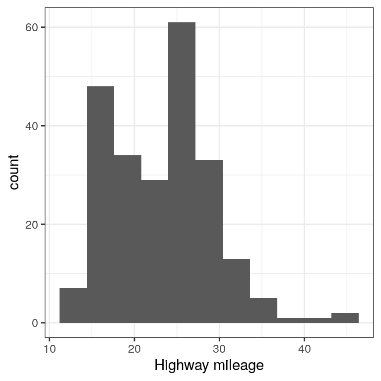
Instead of creating discrete bins, we can look at relative density continuously.
3.4.2 Density plot

A note on defaults: The default statistic (or “stat”) underlying geom_density is called “density” – not surprising. The default stat for geom_histogram is “count”. What do you think would happen if you overrode the default and set stat="count"?
ggplot(mpg, aes(hwy)) +
geom_density(stat = "count")What we discover is that the geometric difference between geom_histogram and geom_density can actually be generalized. geom_histogram is a shortcut for working with geom_bar, and geom_density is a shortcut for working with geom_line.
3.4.3 Bar vs. line plots
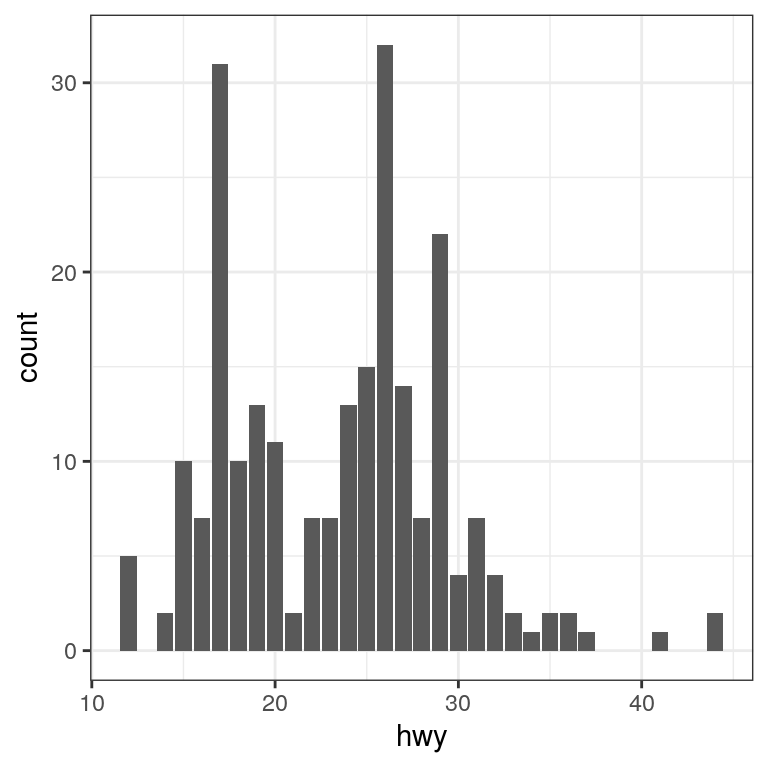
Note that the geometry tells ggplot what kind of plot to use, and the statistic (stat) tells it what kind of summary to present.
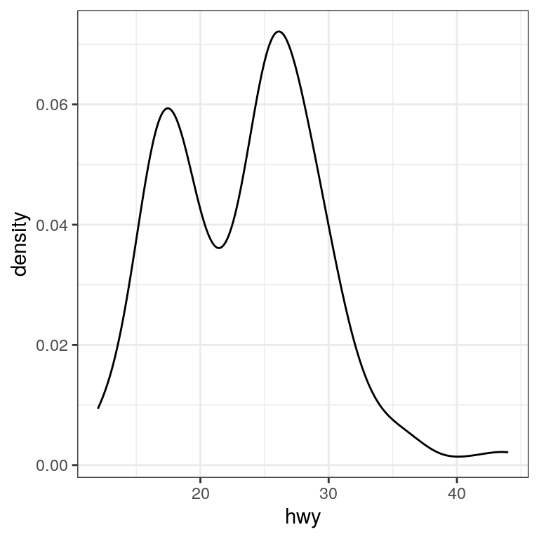
3.5 Plots with two variables
Let’s check out mileage by car manufacturer. We’ll plot one continuous variable by one nominal one.
First, let’s make a bar plot by choosing the stat “summary” and picking the “mean” function to summarize the data.
ggplot(mpg, aes(manufacturer, hwy)) +
geom_bar(stat = "summary", fun.y = "mean") +
ylab('Highway mileage')
One problem with this plot is that it’s hard to read some of the labels because they overlap. How could we fix that? Hint: search the web for “ggplot rotate x axis labels” and add the appropriate command.
TBD: fix
ggplot(mpg, aes(manufacturer, hwy)) +
geom_bar(stat = "summary", fun.y = "mean") +
ylab('Highway mileage')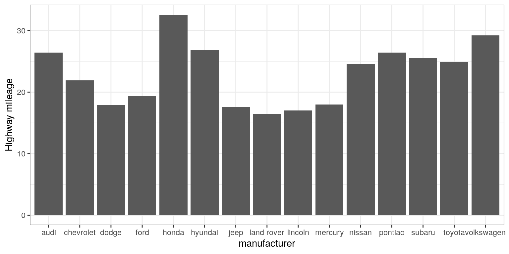
3.5.1 Adding on variables
What if we wanted to add another variable into the mix? Maybe the year of the car is also important to consider. We have a few options here. First, you could map the variable to another aesthetic.
# first, year needs to be converted to a factor
mpg$year <- factor(mpg$year)
ggplot(mpg, aes(manufacturer, hwy, fill = year)) +
geom_bar(stat = "summary", fun.y = "mean")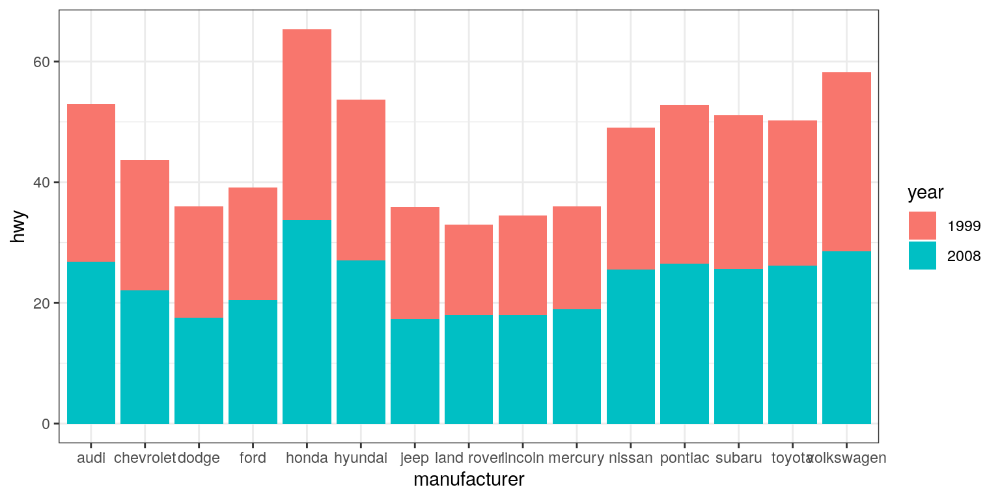
By default, the bars are stacked on top of one another. If you want to separate them, you can change the position argument form its default to “dodge”.
ggplot(mpg, aes(manufacturer, hwy, fill=year)) +
geom_bar(stat = "summary",
fun.y = "mean",
position = "dodge")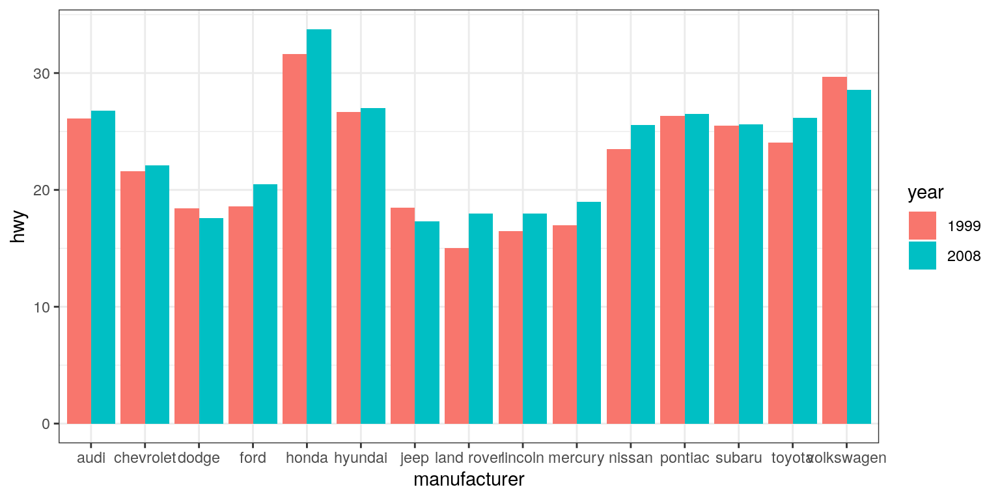
ggplot(mpg, aes(year, hwy,
group=manufacturer,
color=manufacturer)) +
geom_line(stat = "summary", fun.y = "mean")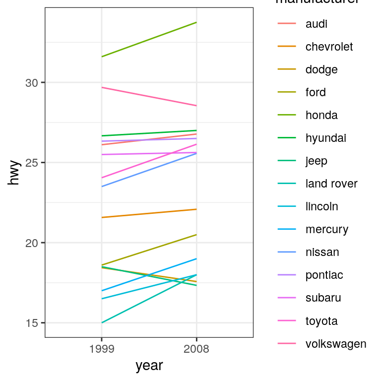
For a less visually cluttered plot, let’s try facetting. This creates subplots for each value of the year variable.
ggplot(mpg, aes(manufacturer, hwy)) +
# split up the bar plot into two by year
facet_grid(year ~ .) +
geom_bar(stat = "summary",
fun.y = "mean")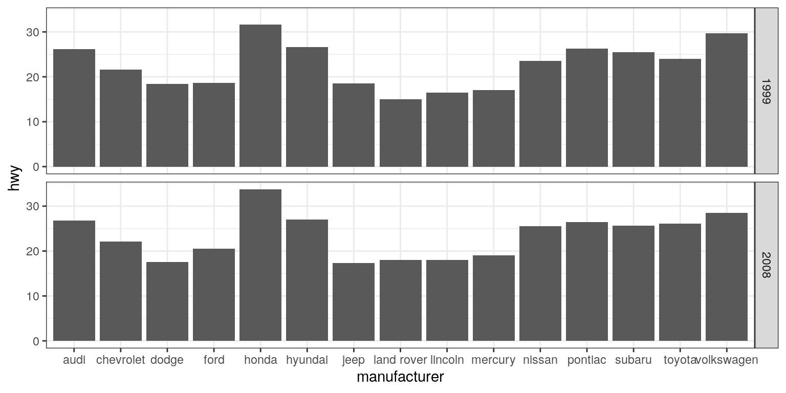
3.5.2 Plotting dispersion
Instead of looking at just the means, we can get a sense of the entire distribution of mileage values for each manufacturer.
3.5.2.1 Box plot
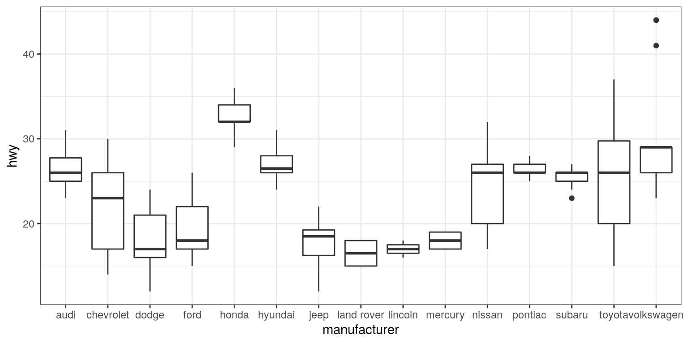
A box plot (or box and whiskers plot) uses quartiles to give us a sense of spread. The thickest line, somewhere inside the box, represents the median. The upper and lower bounds of the box (the hinges) are the first and third quartiles (can you use them to approximate the interquartile range?). The lines extending from the hinges are the remaining data points, excluding outliers, which are plotted as individual points.
3.5.2.2 Error bars
Now, let’s do something a bit more complex, but much more useful – let’s create our own summary of the data, so we can choose which summary statistic to plot and also compute a measure of dispersion of our choosing.
# summarise data
mpg_summary <- mpg %>%
group_by(manufacturer) %>%
summarise(n = n(),
mean_hwy = mean(hwy),
sd_hwy = sd(hwy))
# compute confidence intervals for the error bars
# (we'll talk about this later in the course!)
limits <- aes(
# compute the lower limit of the error bar
ymin = mean_hwy - 1.96 * sd_hwy / sqrt(n),
# compute the upper limit
ymax = mean_hwy + 1.96 * sd_hwy / sqrt(n))
# now we're giving ggplot the mean for each group,
# instead of the datapoints themselves
ggplot(mpg_summary, aes(manufacturer, mean_hwy)) +
# we set stat = "identity" on the summary data
geom_bar(stat = "identity") +
# we create error bars using the limits we computed above
geom_errorbar(limits, width=0.5) 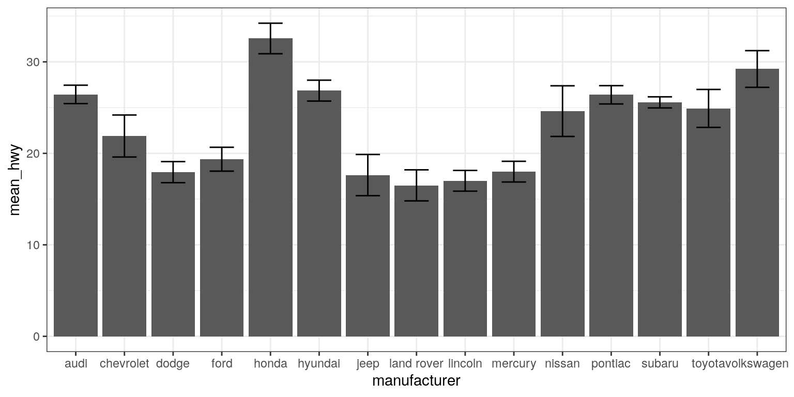
Error bars don’t always mean the same thing – it’s important to determine whether you’re looking at e.g. standard error or confidence intervals (which we’ll talk more about later in the course).
3.5.2.2.1 Minimizing non-data ink
The plot we just created is nice and all, but it’s tough to look at. The bar plots add a lot of ink that doesn’t help us compare engine sizes across manufacturers. Similarly, the width of the error bars doesn’t add any information. Let’s tweak which geometry we use, and tweak the appearance of the error bars.
ggplot(mpg_summary, aes(manufacturer, mean_hwy)) +
# switch to point instead of bar to minimize ink used
geom_point() +
# remove the horizontal parts of the error bars
geom_errorbar(limits, width = 0) 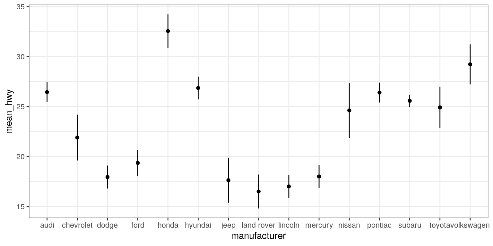
Looks a lot cleaner, but our points are all over the place. Let’s make a final tweak to make learning something from this plot a bit easier.
mpg_summary_ordered <- mpg_summary %>%
mutate(
# we sort manufacturers by mean engine size
manufacturer = reorder(manufacturer, -mean_hwy)
)
ggplot(mpg_summary_ordered, aes(manufacturer, mean_hwy)) +
geom_point() +
geom_errorbar(limits, width = 0) 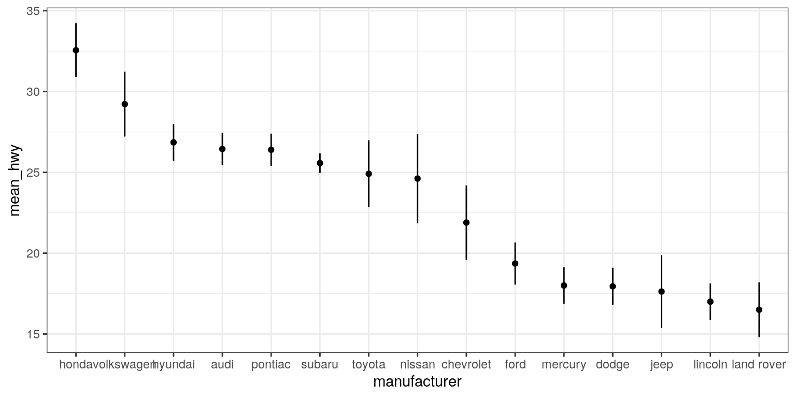
3.5.3 Scatter plot
When we have multiple continuous variables, we can use points to plot each variable on an axis. This is known as a scatter plot. You’ve seen this example in your reading.
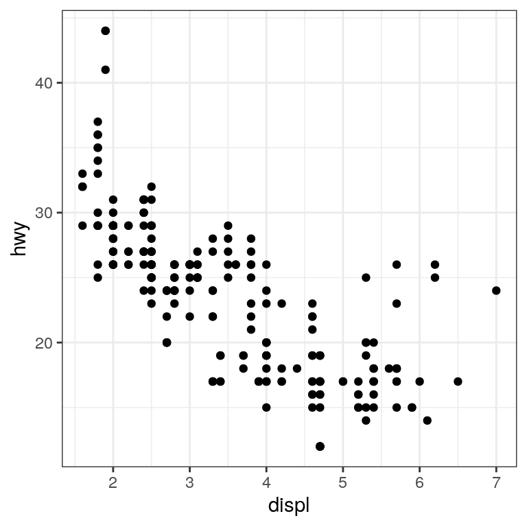
3.5.3.1 Layers of data
We can add layers of data onto this graph, like a line of best fit. We use a geometry known as a smooth to accomplish this.
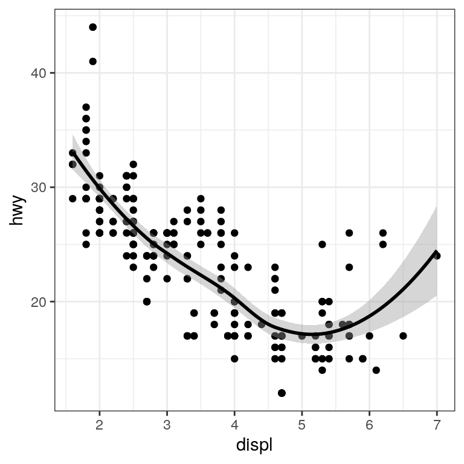
We can add on points and a smooth line for another set of data as well (efficiency in the city instead of on the highway).
ggplot(mpg) +
geom_point(aes(displ, hwy), color = "grey") +
geom_smooth(aes(displ, hwy), color = "grey") +
geom_point(aes(displ, cty), color = "limegreen") +
geom_smooth(aes(displ, cty), color = "limegreen")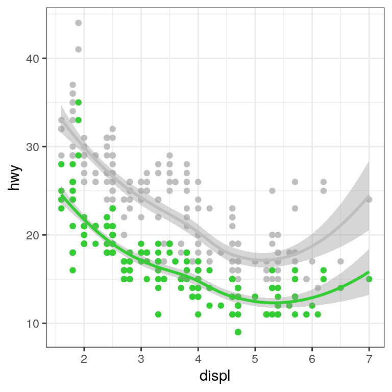
3.6 Creating a more complex plot
In this section we will recreate Figure ?? from Chapter @ref{data-visualization}. Here is the code to generate the figure; we will go through each of its sections below.
oringDf <- read.table("data/orings.csv", sep = ",",
header = TRUE)
oringDf %>%
ggplot(aes(x = Temperature, y = DamageIndex)) +
geom_point() +
geom_smooth(method = "loess",
se = FALSE, span = 1) +
ylim(0, 12) +
geom_vline(xintercept = 27.5, size =8,
alpha = 0.3, color = "red") +
labs(
y = "Damage Index",
x = "Temperature at time of launch"
) +
scale_x_continuous(breaks = seq.int(25, 85, 5)) +
annotate(
"text",
angle=90,
x = 27.5,
y = 6,
label = "Forecasted temperature on Jan 28",
size = 5
)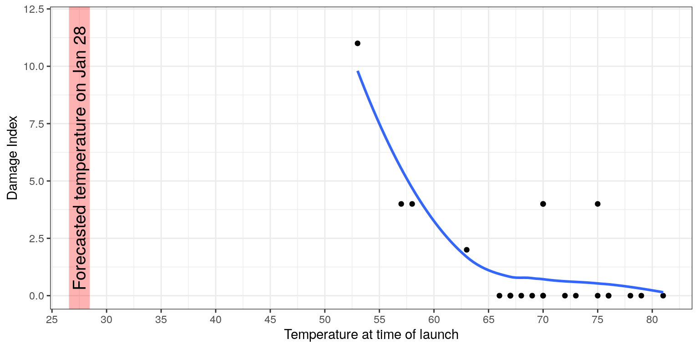